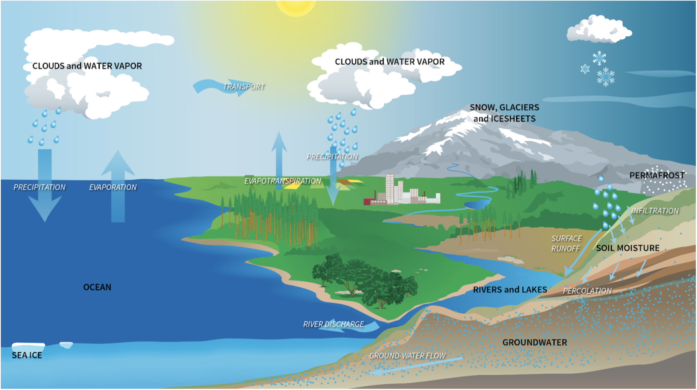

Water cycle is the continuous movement of water on, above, and below the surface of the Earth. Driven by solar energy and gravity. This cycle is essential for all life on earth and influences climate patterns.
Key Processes:
- Evaporation: Transformation of liquid water into water vapor (gas) from bodies of water (oceans, lakes, rivers), soil, and vegetation. Increased by solar radiation, wind, and low humidity.
- Transpiration: Release of water vapor from plants into the atmosphere through tiny pores (stomata) on their leaves.
- Evapotranspiration: The combined process of evaporation and transpiration.
- Condensation: Transformation of water vapor back into liquid water. Occurs when air cools and can no longer hold as much water vapor. Forms clouds, fog, and dew. Requires condensation nuclei (tiny particles like dust, salt, pollen etc).
- Precipitation: Any form of water that falls from clouds to the Earth's surface. Includes rain, snow, sleet, and hail. Driven by gravity.
- Infiltration: Downward movement of water from the surface into the soil. The rate depends on soil type and saturation.
- Percolation: Downward movement of water through the soil and rock layers. Contributes to groundwater.
- Surface Runoff: Flow of water over the land surface when rainfall exceeds infiltration capacity or when the ground is saturated. Collects in rivers, lakes, and eventually flows back to the oceans.
- Groundwater Flow: Movement of water beneath the Earth's surface within permeable rock layers (aquifers). Can eventually discharge into surface waters or the ocean.
Key Reservoirs:
- Oceans: The largest reservoir of water on Earth.
- Atmosphere: Contains water vapor.
- Ice Caps and Glaciers: Store a significant amount of freshwater.
- Groundwater: Water stored beneath the Earth's surface.
- Surface Water: Lakes, rivers, and wetlands.
- Biosphere: Water present in living organisms.
Human Impact:
- Water Pollution: Contamination of water sources, affecting water quality and the cycle.
- Dam Construction: Alters river flow and sediment transport, impacting local water cycles.
- Deforestation: Reduces transpiration and infiltration, increasing runoff and erosion.
- Urbanization: Impervious surfaces (roads, buildings) increase runoff and reduce infiltration.
- Climate Change: Increased temperatures lead to more evaporation, altered precipitation patterns, and melting of ice caps and glaciers, impacting the entire cycle.
- Atmospheric Pollution : Gases such as nitrogen dioxide and sulphur dioxide which are released from combustion of fossil fuels react with precipitation forming nitric and sulphuric acids respectively leading to acid rain.
Key Words:
- Evaporation
- Transpiration
- Condensation
- Condensation nuclei
- Precipitation
- Infiltration
- Surface runoff
- Percolation
- Ground water
- Aquifer
Diagram:

Written by Kasiban Parthipan